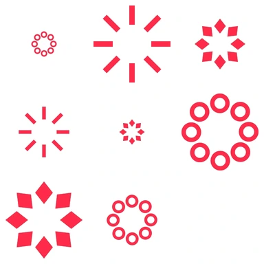
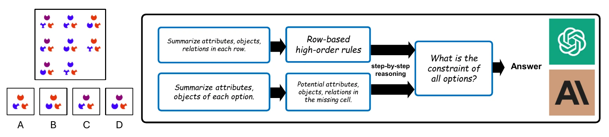
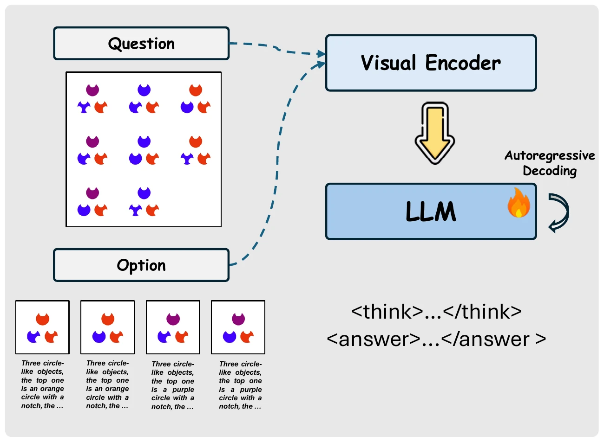
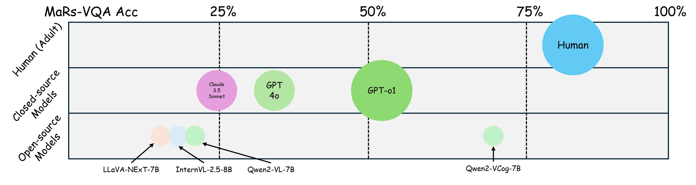
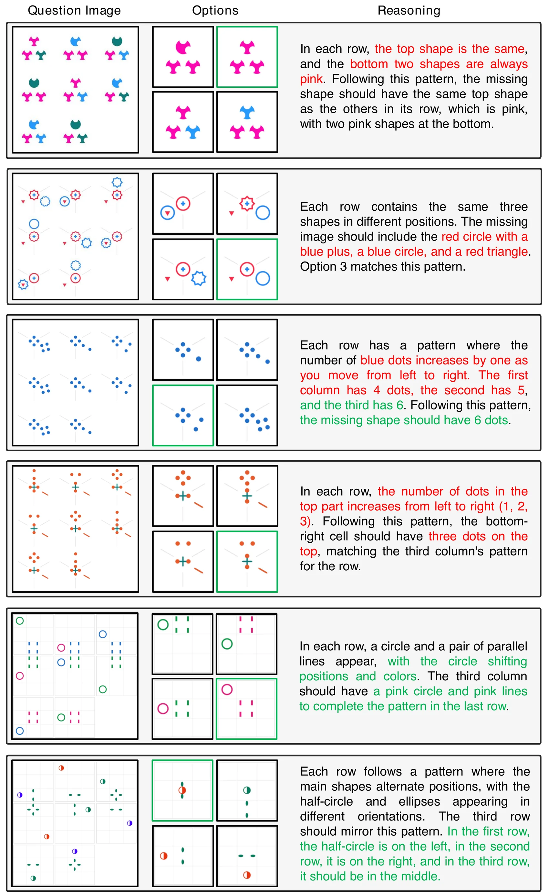

What is the Visual Cognition Gap between Humans and Multimodal LLMs?
*Equal contribution
1University of Illinois Urbana-Champaign 2Georgia Institute of Technology 3University of Virginia 4Purdue University 5HKUST (Guangzhou) 6Shenzhen Children's Hospital
People solve matrix puzzles with no training at all. How close are multimodal LLMs?
Matrix reasoning, finding the rule in a 3×3 grid of abstract shapes and picking the missing cell, is a core part of intelligence tests such as Raven's Progressive Matrices and the WISC. We build MaRs-VQA, 1,440 psychologist-designed matrix items with human reference data, and compare MLLMs with people under the same zero-shot conditions. We also release Qwen2-VCog, a baseline fine-tuned on step-by-step reasoning. The gap is large, and fine-tuning hides it in-domain more than it closes it.

Key takeaways
- 01Matrix puzzles remain hard for MLLMs. With chain-of-thought prompting, the best model, GPT-o1, reaches 52.3 on MaRs-VQA; GPT-4o gets 34.0 and open 7–8B models 17 to 24, at or below the 25% chance level. Human adults score 81.0.
- 02Better prompting helps only a little. Few-shot examples lift GPT-4o from 34.0 to 36.1; multi-round option elimination to 42.0, still 10 points below GPT-o1 and far below people.
- 03Fine-tuning closes the in-domain gap, not the real one. Qwen2-VCog, a LoRA fine-tune of Qwen2-VL on two-section reasoning, reaches 72.7 on MaRs-VQA but only 32.0 on out-of-domain RAVEN, where humans score 84.4.
- 04The reasoning text matters. Training on answers alone, without the step-by-step reasoning, drops Qwen2-VCog by 17.9 points on MaRs-VQA (72.7 to 54.8).
- 05Vision is the bottleneck, not language. Adding perfect text descriptions of the options gives GPT-4o only +2.5 and Qwen2-VCog nothing (72.7 to 71.4). The limit is extracting the visual pattern and holding it in working memory.
MaRs-VQA
MaRs-VQA is built from the Matrix Reasoning Item Bank (MaRs-IB), 18 questionnaires of 80 items each, designed by psychologists for non-verbal reasoning assessment of adolescents and adults and backed by a human study of 659 participants. Each item is an incomplete 3×3 matrix of abstract shapes with four candidate answers. We turn every item into VQA with image options, a written description of each option, and step-by-step reasoning; 480 items form the test split and the rest are for training.
Try one yourself. Items get harder as more attributes change at once.

Which option completes the matrix?
01Difficulty predicts failure
We group test items into five levels by how many attributes change together: shape, color, size, position and the number of objects. GPT-4o with chain-of-thought solves 57.8% of Level 1 items but only 19 to 27% from Level 2 on, near the 25% chance level.
The curve resembles that of people: every extra changing attribute adds load. GPT-4o handles size changes well and struggles most with items that contain several objects.
02How MaRs-VQA compares
Earlier zero-shot matrix sets for MLLMs are small and lack human data. MaRs-VQA is 6 to 29 times larger, psychologically validated, comes with human reference results, and ships VQA annotations for every item.
Testing models the way people are tested
Children take matrix tests zero-shot, relying only on general skills. We evaluate MLLMs the same way: a system prompt explains the task, and the model receives the question image and the option images as separate inputs. For closed models we use a structured chain of thought; to give the community an open baseline, we also fine-tune Qwen2-VL on MaRs-VQA's step-by-step reasoning and test it in- and out-of-domain.

Two sections: think, then answer
Qwen2-VCog is trained to write its reasoning in a fixed, tagged format. <think> holds a short overview
of the puzzle, a structured description of the visual elements (color, shape, position), the rule it
identifies, and a check of each option against that rule. <answer> holds a
single statement of the chosen option. The tags keep reasoning structured instead of free-form self-talk.

Zero-shot, multi-image
The question image q, the option images x and a system prompt xsys that only defines the task. No examples, as in a human test.
Chain of thought, and variants
Structured CoT for every closed model; for GPT-4o we also try few-shot examples and a multi-round strategy that eliminates options and re-checks after each round.
Qwen2-VCog baseline
LoRA fine-tuning of Qwen2-VL-7B on the two-section reasoning annotations of the MaRs-VQA train split. RAVEN is never seen in training and serves as the out-of-domain test.
<think>…</think> <answer>…</answer>Leaderboard
Every model is evaluated on MaRs-VQA (480 test items, four options) and on 560 items of RAVEN (eight options), the out-of-domain test. Closed models use chain-of-thought prompting; results are averaged over three seeds. Click a column to sort.
Human and random rows are references and are not ranked. Qwen2-VCog is fine-tuned on the MaRs-VQA train split only, so RAVEN is out-of-domain for it.
How the human baselines were measured
01Two benchmarks, one gap
Each row shows a model's accuracy on MaRs-VQA and on RAVEN. People sit above 80 on both. Zero-shot models score 12 to 29 on RAVEN, where chance is 12.5, and below 35 on MaRs-VQA, with GPT-o1 the outlier at 52.3.
Qwen2-VCog is the only model whose two dots sit far apart: fine-tuning moves MaRs-VQA from 23.8 to 72.7, but RAVEN only from 29.3 to 32.0. It picks up shortcuts in the item bank more than the skill itself.

02Scale alone won't close it
Larger models do better, in line with scaling laws over a limited range. But the distance to people is large enough that simply growing models is unlikely to bridge it.
Why do MLLMs fail?
Reading the models' reasoning points to three problems: they make little direct use of visual features, so position and spatial details get lost; their visual working memory is short, so key information fades during text reasoning; and they struggle to combine perception skills into high-level reasoning. Three ablations test where the limit lies.
Prompting strategies
GPT-4o on MaRs-VQA. Examples help a little, multi-round elimination more; none reaches GPT-o1.
Reasoning strings in SFT
Qwen2-VCog trained with and without the step-by-step reasoning in its targets.
Vision or language?
Accuracy as inputs grow: question only (options picked by CLIP similarity), plus option images, plus perfect option descriptions.
01What the ablations say
Without option images, both models are near chance: they cannot read the rule from the question alone. Given the images, Qwen2-VCog matches patterns well, and perfect text descriptions add nothing. Language is not the bottleneck; extracting the visual pattern is.
Fine-tuning on MaRs-VQA also leaves general skills intact: Qwen2-VCog stays within noise of Qwen2-VL on six standard benchmarks.
How GPT-4o reasons
GPT-4o often spots part of the pattern, then overlooks or misuses a key feature on the way to its answer. Green text marks correct reasoning, red marks errors, and green boxes mark the correct option.

Citation
@inproceedings{cao2025visual,
title = {What is the Visual Cognition Gap between Humans and
Multimodal LLMs?},
author = {Cao, Xu and Shen, Yifan and Lai, Bolin and Ye, Wenqian and
Ma, Yunsheng and Heintz, Joerg and Chen, Jintai and
Huang, Meihuan and Cao, Jianguo and Zhang, Aidong and
Rehg, James M.},
booktitle = {Conference on Language Modeling (COLM)},
year = {2025}
}